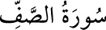

<a name=9521></a><br/>
<b>61- es-SAFF SÛRESİ</b><br/>
<i><b>Adını, müminlerin saf tutarak Allah yolunda savaştıklarını bildiren 4. âyetinden</b></i><br/>
<i><b>almıştır; </b></i><br/>
<i><b>Medine’de inmiştir; 14 âyettir.</b></i><br/>
